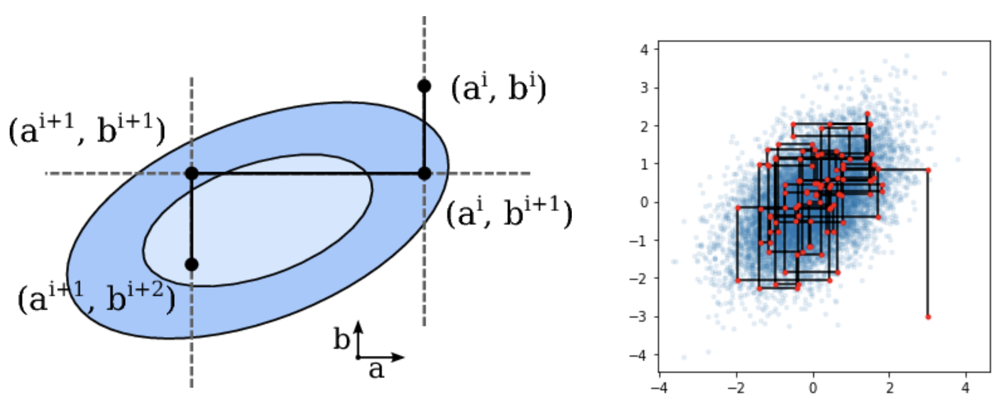
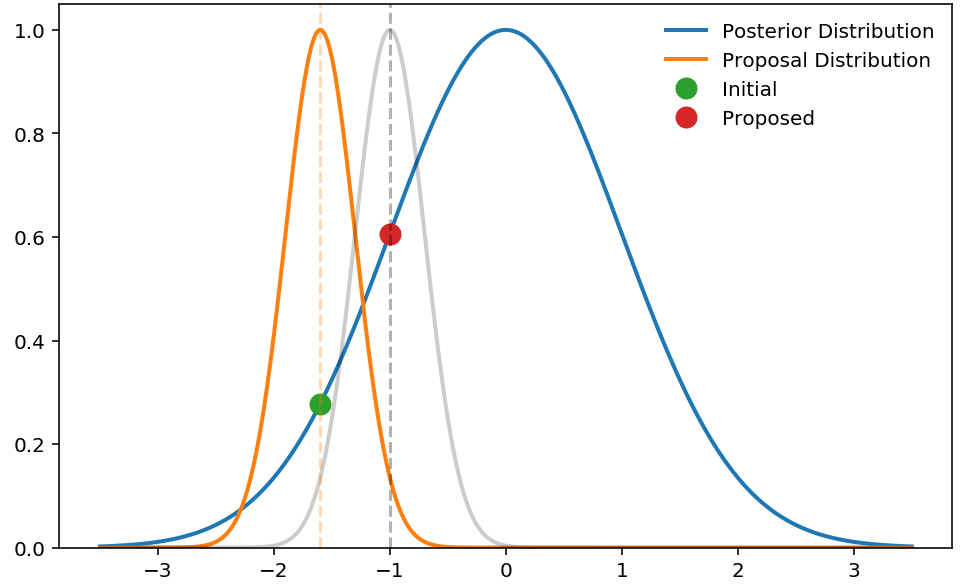
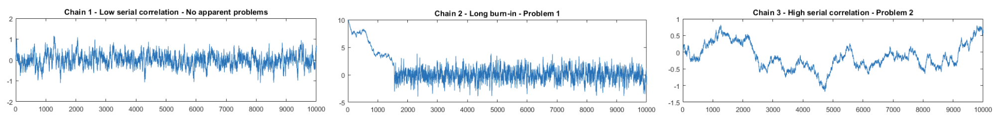
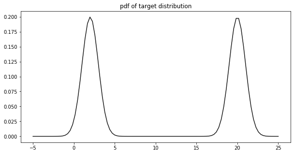
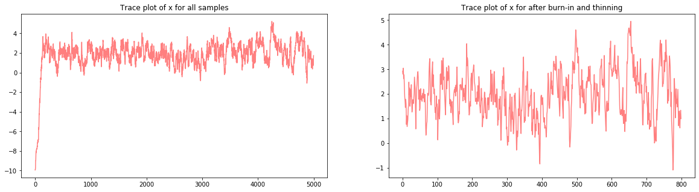
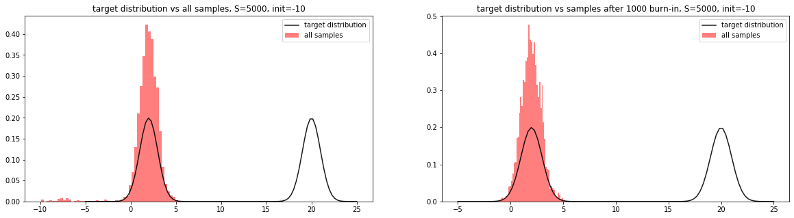
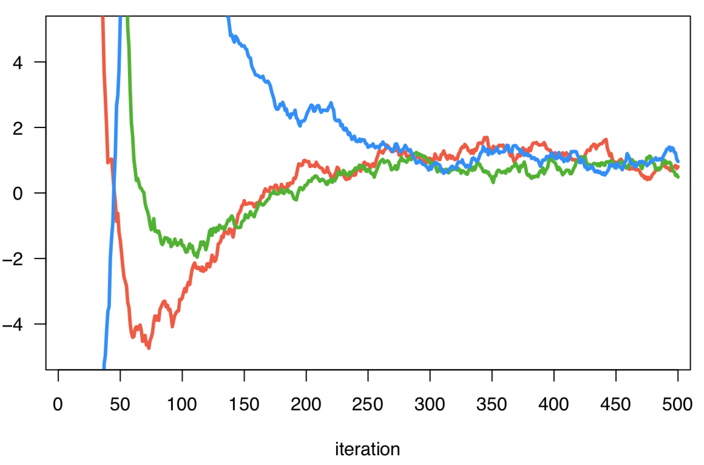
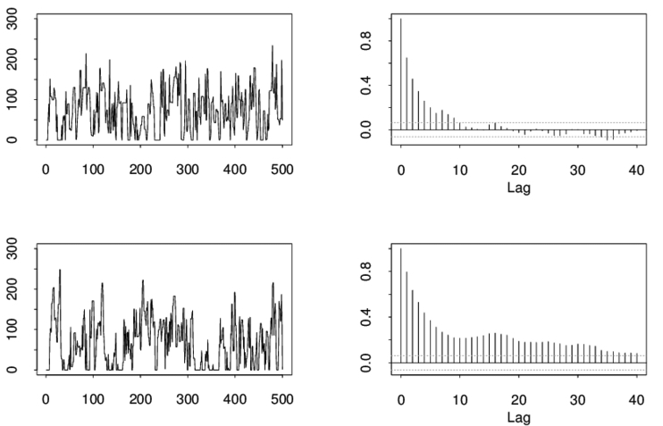
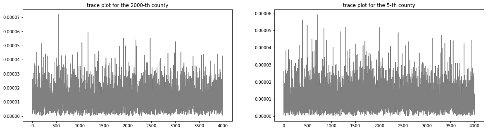
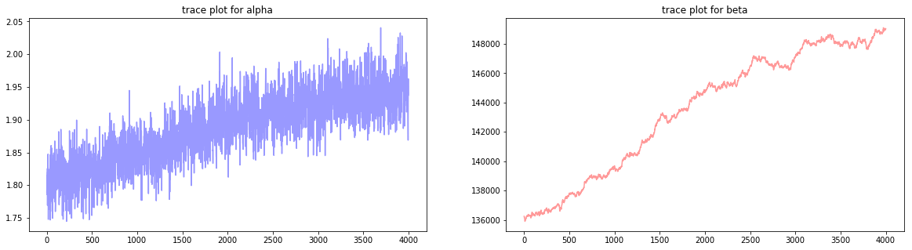

9. Metropolis-Hastings and Gibbs#
This chapter is adapted from AM207 (Harvard, Fall 2021). Watch the recorded lecture.
In this chapter
MCMC Samplers: Metropolis-Hastings and Gibbs
MCMC Diagnostics
A Review of Statistical Modeling Thus Far
9.1. Motivation#
Last time, we’d argued intuitively that the Gibbs sampler is a type of MCMC sampler, but we did not prove it.
In this chapter, rather than directly proving that Gibbs is an MCMC sampler, we describe a more general type of MCMC sampler, the Metropolis-Hastings sampler, and show that the Gibbs sampler is a special case of Metropolis-Hastings.


9.2. Markov Chain Monte Carlo#
Markov Chain Monte Carlo Samplers#
Every sampler for a distribution \(p(\theta)\) over the domain \(\Theta\) defines a stochastic process \(\{X_0, X_1, \ldots, \}\), where the state space is \(\Theta\).
If the sampler defines a Markov chain whose unique stationary and limiting distribution is \(p\), we call it a Markov Chain Monte Carlo (MCMC) sampler.
That is, for every MCMC sampler, we have that
Stationary: \(pT = p\)
Limiting: \(\underset{n\to \infty}{\lim} \pi^{(n)} = p\), for any \(\pi^{(0)}\)
where \(T\) is the transition matrix or kernel pdf defined by the sampler.
What Do We Need to Prove to get \(pT=p\) and \(\underset{n\to \infty}{\lim} \pi^{(n)} = p\)?#
Prove that the sampler is irreducible and aperiodic. Then, there is a unique stationary distribution \(\pi\) such that
\[\pi T = \pi.\]Prove that the sampler is reversible or detailed balanced with respect to \(p\). Then,
\[\pi = p.\]
Metropolis-Hastings: The Idea#
The Metropolis-Hastings algorithm is similar to rejection sampling, but rather than sampling from a proposal distribution \(q\) over the entire domain, we use the proposal distribution to sample a point close to the last sample. If the proposed sample has higher likelihood than the current under the target pdf \(p\) then we are more likely to accept it as a sample from \(p\).
Rather than making global “jumps” or proposals that may be very unlikely under \(p\), we make a series of smaller local “jumps”.


Metropolis-Hastings: The Algorithm#
For a target distribution \(p(\theta)\) over \(\Theta\) and a proposal distribution \(q(\theta | \theta_{\text{old}})\) over \(\Theta\), the Metropolis-Hastings (MH) algorithm is a MCMC algorithm for generating samples from \(p\).
Step 0: choose an initial value \(\theta_0 \in \Theta\).
Step 1: repeat for \(S\) number of steps:
Proposal: propose a sample \(\theta_{\text{prop}} \sim q(\theta | \theta_{\text{old}})\)
Accept/Reject:
generate \(U \sim U(0, 1)\)
generate accept “probability”:
\[\alpha(\theta_{\text{prop}}, \theta_{\text{old}}) = \min\left(1, \frac{p(\theta_{\text{prop}})/q(\theta_{\text{prop}} | \theta_{\text{old}})}{p(\theta_{\text{old}})/ q(\theta_{\text{old}}| \theta_{\text{prop}})}\right)\]if \(U < \alpha(\theta_{\text{prop}}, \theta_{\text{old}})\):
add \(\theta_{\text{prop}}\) to list of accepted samples
set \(\theta_{\text{old}} \leftarrow \theta_{\text{prop}}\)
else: add \(\theta_{\text{old}}\) to list of accepted samples
Metropolis-Hastings: Proof of Correctness#
We want to show that the Metropolis Hastings algorithm defines a Markov Chain, \(\theta_0, \theta_1, \ldots\), with a unique stationary distribution \(p\) and that the chain converges to \(p\) regardless of initialization. So we need:
MH defines an irreducible chain: a sufficient condition is that for any \(\theta' \in \Theta\)
MH defines an aperiodic chain: a sufficient condition is that for any \(\theta' \in \Theta\)
MH defines an reversible chain (i.e. detailed balance is satisfied) with respect to \(p\):
where \(T_{\text{MH}}\) is transition kernel pdf of the MH sampler.
Metropolis-Hastings: Proof of Detailed Balance#
Recall that the transition kernel pdf \(T_{\text{MH}}(\theta, \theta')\) is the likelihood of the MH sampler transitioning from \(\theta\) to \(\theta'\). When \(\theta \neq \theta'\), the MH transition kernel pdf is, written a more friendly way, using \(T_{\text{MH}}(\theta' | \theta)\) to denote transitioning from \(\theta\) to \(\theta'\):
Now, we can show:
Gibbs as Metropolis-Hastings#
Now we are ready to prove the correctness of Gibbs sampling, by realizing it as a special instance of Metropolis-Hastings sampling.
Let \(\theta \in \mathbb{R}^D\). Let’s define the proposal distribution \(q(\theta_{\text{new}}|\theta_{\text{old}})\) as a two stage process:
propose an integer \(d \in [1, D]\) uniformly
propose \(\theta_{\text{new}}\) where \(\theta_{d, \text{new}} \sim p(\theta_d | \theta_{-d, \text{old}})\) and \(\theta_{-d, \text{new}} = \theta_{-d, \text{old}}\)
where \(\theta_d\) is the \(d\)-th component of \(\theta\) and \(\theta_{-d} = [\theta_1, \ldots, \theta_{d-1}, \theta_{d+1}, \ldots, \theta_D]\).
Then the acceptance probability is:
in the second to last equality, we make use of the fact that \(\theta_{-d, \text{new}} = \theta_{-d, \text{old}}\). That is, Gibbs sampling is a MH algorithm with 100% acceptance rate.
9.3. Simple MCMC Diagnostics#
Traceplot Checks for Mixing#
Reversibility, irreducibility and aperiodicity guarantee that as the number of iterations \(S\) approaches infinity, the sampler will be sampling from the target distribution \(p\). In practice, getting sufficiently close to convergence, or mixing, may take a very large number of steps.
A quick and intuitive way to check for mixing is by visualizing the traceplots of each dimension of the samples over iterations. That is, for each dimension of the samples, we plot the sampled values of that dimension against the iteration number.


Burn-in and Thinning#
When initialization is the problem: when you initialize your sampler far from any regions of high probability mass, the initial samples produced by your sampler will have a trend – they will move sequentially towards an area in the sample space \(\Theta\) where the target distribution \(p\) has high mass.
This problem can be mitigated by discarding \(B\) number of initial samples, this chunk of samples is called the burn-in.
When high spatial correlation is the problem: for Metropolis-Hastings, when your proposal distribution has very low variance the proposed sample will be very close to the current sample. This results in higher correlations between consecutive samples in your chain.
This problem can be mitigated by discarding every \(T\) number of samples, this is called thinning. The rational is that every sample might be correlated with \(T\) number of samples immediately preceding or succeeding it, but its correlation with samples greater than \(T\) steps away from it will be much smaller.
Example: Sampling from a Mixture of Two Gaussians#
fig, ax = plt.subplots(1, 1, figsize=(10, 5))
x = np.linspace(-5, 25, 100)
ax.plot(x, target(x), color='black', alpha=0.9)
ax.set_title('pdf of target distribution')
plt.show()

Visual Checks for Mixing#
fig, ax = plt.subplots(1, 2, figsize=(20, 5))
ax[0].plot(range(S), samples, color='red', alpha=0.5)
ax[0].set_title('Trace plot of x for all samples')
ax[1].plot(range(len(samples[burn_in::thinning])), samples[burn_in::thinning], color='red', alpha=0.5)
ax[1].set_title('Trace plot of x for after burn-in and thinning')
plt.show()

Visual Checks Can be Misleading#
fig, ax = plt.subplots(1, 2, figsize=(20, 5))
ax[0] = plot_samples(ax[0], target, samples, 'target distribution vs all samples, S={}, init={}'.format(S, init))
ax[1] = plot_samples(ax[1], target, samples[200:], 'target distribution vs samples after {} burn-in, S={}, init={}'.format(burn_in, S, init))
plt.show()

The Importance of Tuning Your Sampler#
Our Metropolis-Hastings sampler was unable to capture both modes in the target distribution!
Is this because this algorithm is incapable of sampling from this specific distribution of this class of multimodal distributions? Or did we make inappropriate design choices when we specified our sampler?
Question: we’ve demonstrated that visualizing the traceplot may be a poor metric for evaluating MCMC performance. Is there a better way to check if our MCMC chain has mixed? In particular, how do we detect that there is still a high-likelihood region in the domain \(\Theta\) that the sampler has yet to visit?
9.4. More MCMC Diagnostics and Best Practices#
More Rigorous Checks for Convergence#
Look for:
Large segments of the chain (sequence of samples) should have give similar statistics (mean, variance etc)
Low correlations within states of the chain
“Reasonably high” acceptance rate of proposed steps
Multiple chains initialized from different initial points give similar results
Best practices:
Always run multiple chains initialized from very different random starting points
Always run your chains for as long as you can then burn and thin
Always check all relevant convergence diagnostics
Never be too certain: remember that there is no “proof” of convergence for finite chains!
Keep reading about best practice!
Visual Diagnostics: Traceplots of Multiple Chains#


Autocorrelation: the “Effective” Sample Size#
We quantify how much the samples in the chain are correlated with the samples obtained \(k\)-steps later (the \(k\)-th lag). The autocorrelation \(\rho_k\) is defined as
We plot the autocorrelation for each \(k = 1, \ldots, \frac{N}{2}\), and this autocorrelation plot tells us how much we to thin in order to obtain effectively independent samples. The autocorrelation plot gives us an idea of the effective sample size of the Markov chain.
Visual Diagnostics: The Autocorrelation Plot#


Quantitative Diagnostics#
Idea: measure between-chain and within-chain variability of a quantity of interest – if the chains have converged, these measures will be similar; otherwise, the between-chain variability will be larger.
Gelman & Rubin: quantity \(\widehat{R}_{\text{GR}} = \frac{B}{W}\), which compares \(B\) the empirical variance of all the chains pooled and \(W\) the average empirical variance within each chain. If \(\widehat{R}_{\text{GR}}\) is large then the chains are very different (not converged). If \(\widehat{R}_{\text{GR}} = 1\) is ideal but in practice we accept \(\widehat{R}_{\text{GR}} < 1.05\).
Geweke: takes two nonoverlapping parts (usually the first 0.1 and last 0.5 proportions) of the Markov chain and compares the means of both parts, using a difference of means test to see if the two parts of the chain are from the same distribution (the test statistic is a standard Z-score with the standard errors adjusted for autocorrelation).
9.5. Review of Statistical Modeling#
What We Can Do So Far#
(Models) When we have observed data \(Y_{\text{Obs}}\), we can model \(Y_{\text{Obs}}\) as a random variable \(Y_{\text{Obs}} \sim p(Y |\theta)\) with a known distribution \(p\).
if \(Y_{\text{Obs}}\) is a label, we can model it as a Categorical or Bernoulli variable
if \(Y_{\text{Obs}}\) is a count, we can model it as a Binomial, Multinomial or Poisson
if \(Y_{\text{Obs}}\) is continuous, we can model it as a Gaussian, Exponential, Dirichlet etc
(Inference) We can make statements about \(\theta\) by performing:
Maximum Likelihood Estimation: compute a fixed value \(\theta_{\text{MLE}}\) that maximizes the likelihood of the observed data \(Y\).
Bayesian Inference: assume a prior for \(\theta\), encoding our knowledge and uncertainty about \(\theta\), then compute the posterior \(p(\theta| Y)\) distribution.
(Inference Algorithm) We choose an algorithm to perform inference:
Maximum Likelihood Estimation: analytically solve an unconstrained or constrained optimization problem to obtain \(\theta_{\text{MLE}}\).
Bayesian Inference:
if the prior and likelihood are conjugate, then analytically derive the posterior distribution
if the posterior distribution does not have a known (to you) form, sample from it using a sampler.
What Happens After Inference?#
(Predictive Evaluation) In practice, we do not know the true model \(\theta_{\text{True}}\)! Thus, \(\theta_{\text{MLE}}\) and \(p(\theta|Y)\) cannot be evaluated by comparison to \(\theta_{\text{True}}\).
Maximum Likelihood Estimation: we sample multiple \(Y \sim p(Y| \theta_{\text{MLE}})\) and compare with observed data \(Y_{\text{Obs}}\).
Bayesian Inference: we sample multiple \(Y\) from the posterior predictive and compare with observed data \(Y_{\text{Obs}}\).
(Uncertainty Evaluation) Before making decisions with real-life consequence based on your model, you should check the precision of your estimate or uncertainty of you model.
Maximum Likelihood Estimation: repeat the MLE computation on many bootstrap samples of \(Y_{\text{Obs}}\). Compute the confidence interval of \(\theta\) and the predictive interval for \(Y\). These intervals indicate precision.
Bayesian Inference: Compute credible intervals for the posterior \(p(\theta|Y)\) and the predictive intervals of the posterior predictive. These intervals indicate model uncertainty.
The Modeling Process#

9.6. Summary#
How Do I Know That My Sampler is an MCMC Sampler for the target \(\pi^{\text{target}}\)?#
Check that my chain is aperiodic.
Finite State Space: check that the period of each state is 1, where the period of a state is the
gcdof the lengths of all paths starting and ending.Continuous State Space: Periodicity is defined as the largest \(n\) such that there is a pairwise disjoint family of \(n\) number of measurable sets where \(T(x, A_{j+1}) = 1\) for all \(x\in A_j\) and \(T(x, A_1) = 1\) for all \(x\in A_n\), where \(T(x,\cdot)\) is the measure induced by the transition kernel \(T\).
It’s sufficient that the proposal distribution is positive everywhere in the sample space.
Check that my chain is irreducible.
Finite State Space: check that for some \(n\) the transition matrix \(T^n\) has all positive entries.
Continuous State Space: a kernel is Harris positive recurrent if it is \(\varphi\)-irreducible (i.e. there is some \(n\) such that for all \(A\) we have \(\varphi(A)>0\), \(T^n(x, A) > 0\)) with stationary distribution \(\pi\) and for all \(\pi(A)>0\), all \(x\), we have \(Pr(\tau_A <\infty|X_0 =x)=1\), where \(\tau_A = \inf\{n\geq 1: X_n \in A\}.\)
It’s sufficient that the proposal distribution is positive everywhere in the sample space.
By the Fundamental Theorem, we get that there exists a unique stationary distribution \(\pi^{\text{sta}}\) that is the limiting distribution \(\pi^{\infty}\):
\[ \pi^{\text{sta}} = \pi^{\infty} \]We check that the sampler satisfy detailed balance with respect to \(\pi^{\text{target}}\).
Then we know that \(\pi^{\text{target}}\) is stationary, since the stationary distribution is unique for our sampler, and hence limiting:
\[ \pi^{\text{target}} = \pi^{\text{sta}} = \pi^{\infty} \]
Samplers with Asymptotic Guarantees Can Be Lemons!#
Burn-in: The first chunk of samples from an MCMC sampler will be worthless. We need to discard these samples.
Mixing: How do we know when the sampler is finally sampling from \(\pi^{\text{target}}\)?
Look at the trace plots
Trace plots can be misleading!
Download the derivation (PDF)Look at the correlation plots
Remember that all your metrics are flawed!
More Rigorous Checks for Convergence#
Look for:
Large segments of the chain (sequence of samples) should have give similar statistics (mean, variance etc)
Low correlations within states of the chain
“Reasonably high” acceptance rate of proposed steps
Multiple chains initialized from different initial points give similar results
Best practices:
Always run multiple chains initialized from very different random starting points
Always run your chains for as long as you can then burn and thin
Always check all relevant convergence diagnostics
Never be too certain: remember that there is no “proof” of convergence for finite chains!
Keep reading about best practice!
What Are the Broader Impacts of MCMC Theory?#
How much technical know-how does it take to understand how MCMC samplers work?
Do ML researchers need to understand how MCMC samplers work? How much do they need to understand?
Do data scientists need to understand how MCMC samplers work? How much do they need to understand?
Do domain experts (like clinicians) need to understand how MCMC samplers work? How much do they need to understand?
How would each group of people know when the sampler has failed?
How much do you think you need to understand in order to comfortably use MCMC samplers? Does your perceived technical overhead of understanding MCMC discourage you from using this method? Innovating in this field?
What kinds of power hierarchies are created by us using fancy models with fancy theory – i.e. how much power do affected communities have in changing the technology or detecting/attributing fault? How can we equalize this distribution of power?
9.7. Exercises#
These problems were originally assigned as homework. Data files are in the book’s data/ folder. Worked solutions, where available, are collapsed beneath the questions they answer; try each problem before expanding them.
Problem Set: Modeling Kidney Cancer Data#
In this problem, we will work with the US Kidney Cancer Data set, kcancer.csv. This is a dataset of kidney cancer frequencies across the US over 5 years on a per county basis. Suppose that the model you develop will be deployed by the CDC as part of a system that identifies cancer hotspots for further research and for establishing targeted cancer drug trials.
In this problem set, we focus on the mechanics of setting up a statistical model for this data set and performing inference on it. In the Chapter 13 problem set, we will focus on interpreting this model and comparing it with others in context.
Let \(N\) be the number of counties; let \(y_j\) the number of kidney cancer case for the \(j\)-th county, \(n_j\) the population of the \(j\)-county and \(\theta_j\) be the underlying kidney cancer rate for that county. The following is a Bayesian model for our data:
where \(\alpha, \beta\) are hyper-parameters of the model.
Rather than arbitrarily choosing the hyperparameters \(\alpha, \beta\), following the Bayesian philosophy, we typically put additional priors on quantities of which we are uncertain. That is, we model the kidney cancer rates using a hierarchical model:
where \(a, b, c, d\) are hyperparameters.
In this problem, you will implement a modified Gibbs sampler to sample from the posterior of this complex model.
Exercise: Part I: The Conditional Distributions
Justify our choice to use a hierarchical model. Specifically, explain the draw-backs of using MLE estimates of \(\theta_j\) to represent the underlying cancer rates of these counties (recall the discussion in Chapter 3). Explain the draw-backs of choosing specific values for the hyper-parameters of \(\alpha\) and \(\beta\) rather than putting priors on them (recall the discussion of priors in the Chapter 3 problem set).
Verify that the conditional distributions are
\[\begin{split}\begin{aligned} p(\theta_j | \theta_{-j}, y, \alpha, \beta) &= Ga(\theta_j; \alpha + y_j, 5 n_j + \beta),\\ p(\alpha, \beta | \theta, y) &\propto \frac{\beta^{N\alpha}}{\Gamma^N(\alpha)} \left[\prod_j \theta_j^{\alpha - 1}\right] e^{-\sum_j\beta\theta_j - d\beta - b\alpha} \alpha^{a-1} \beta^{c-1} \end{aligned}\end{split}\]where we use the following notation:
\[\begin{split}\begin{aligned} \theta &:= \{ \theta_j\}_{j=1, \ldots, N}\\ \theta_{-j} &:= \{ \theta_i\}_{i=1, \ldots, j-1, j+1,\ldots, N}\\ y &:= \{y_j \}_{j=1, \ldots, N}\\ y_{-j} &:= \{ y_i\}_{i=1,\ldots, j-1, j+1,\ldots, N}\\ \end{aligned}\end{split}\]Unfortunately, you see that \(p(\alpha, \beta | \theta, y)\) doesn’t resemble the pdf of a nice simple distribution; that is, it is unclear how to sample from it.
Solution: Part I, Question 1
As discussed in Chapter 3, using the MLE to represent cancer rates exaggerates the rates (either higher or lower than they ought to be) when the population in the county is small. The issue with a simple Bayesian model is that the posterior can be highly sensitive to the choice of prior, again, when the number of observations is small (see the Chapter 3 problem set), i.e. when the populations of the county is small priors can add a lot of bias! Right now, our justification for adding the gamma hyper priors to the model is to mitigate the effect of the choice of prior on the posterior. Chapter 13 discusses another advantage of choosing a hierarchical model.
Solution: Part I, Question 2
The joint distribution of the variables in our hierarchical model is
Note that, with respect to \(\theta_j\), every term involving \(\theta_k\) where \(k\neq j\) is a constant. Thus, \(p(\theta_j | \theta_{-j}, y, \alpha, \beta)\) can be written
Here we’re using again the fact that \(p(\theta_j | \theta_{-j}, y, \alpha, \beta)\) is a pdf so if the non-constant terms of \(p(\theta_j | \theta_{-j}, y, \alpha, \beta)\) match those of a Gamma distribution, then the normalizing constant of \(p(\theta_j | \theta_{-j}, y, \alpha, \beta)\) has to be that of the Gamma.
Similarly, \(p(\alpha, \beta | \theta, y)\) (again treating all terms not containing \(\alpha\) and \(\beta\) as constants) can be written
Exercise: Part II: Metropolis-Hastings-in-Gibbs
When one or more conditional distributions in a Gibbs sampler do not have closed forms (this is the case for most models), we often sample from these conditionals using another MCMC method (e.g. Metropolis Hastings). That is, we modify the Gibbs sampler as follows:
I. Sample \(\theta_j\) using the closed form for \(p(\theta_j | \theta_{-j}, y, \alpha, \beta)\).
II. Sample \(\alpha, \beta\) from \(p(\alpha, \beta | \theta, y)\) using a Metropolis-Hastings step (i.e. use a proposal distribution to propose a sample and the MH reject/accept mechanism to accept the new sample or keep the old).
This algorithm is called a Metropolis-Hastings-in-Gibbs sampler.
Note that we computed \(p(\alpha, \beta | \theta, y)\) only up to a constant. Show why we don’t need to know the normalizing constant of \(p(\alpha, \beta | \theta, y)\) when we perform MH sampling.
Implement and run a Metropolis-Hastings-in-Gibbs sampler for the kidney cancer model.
We suggest the following settings for your MH-in-Gibbs sampler, but please feel free to use your own:
Gibbs sweeps: 100,000
\(a = 9, b = 6, c = 9, d = 0.00001\)
Starting points: \(\alpha_0 = 1.54517349188, \beta_0 = 133514.171939\)
proposal distribution: \(\mathcal{N}\left([\alpha, \beta], \left[\begin{array}{cc} 0.1 & 0 \\ 0 & 1000\end{array}\right]\right)\)
burn in: 10%
thinning: 10
Check for and discuss the convergence of your sampler. If you think your sampler has converged, explain why. If you believe your sampler has not converged, explain what next steps you might take to determine which design choices were problematic.
Important Disclaimer: Convergence in a untweaked sampler may be unlikely after only 100,000 Gibbs sweeps. We are not asking you in this problem set to achieve convergence, but you must demonstrate that you know how to perform diagnostics on your sampler.
Optional not Required: Tweak the settings in your sampler (e.g. number of sweeps) in order to achieve reasonable confidence that your sampler has converged. Reconsider also other design choices like, do you need to sample \(\alpha\) and \(\beta\) jointly?
Solution: Part II, Question 1
Note that the acceptance probability of the Metropolis-Hastings algorithm is defined as
At a first glance it looks like we need to evaluate the pdf \(p\). However, consider the case where we only know \(p\) up to a constant. That is, we have a function \(\tilde{p} = p/\mathcal{Z}\), where \(\mathcal{Z}\) is a constant. Then the acceptance probability can be written:
That is, we only need to know the target distribution \(p\) up to a constant. In particular, this means that for posteriors whose normalizing constant we can’t compute, we can still apply MH sampling!
Solution: Part II, Question 2
We implement Metropolis-Hastings-in-Gibbs sampler for the kidney cancer model.
#function for sampling a pair (alpha, beta) using Metropolis-Hastings
def draw_alpha_beta(alpha, beta, y, theta, steps):
#initialization
old_alpha = alpha
old_beta = beta
accept = 0
for step in range(steps):
#propose a pair (alpha, beta)
new_alpha, new_beta = np.random.multivariate_normal([old_alpha, old_beta], [[sigma_alpha, 0], [0, sigma_beta]], 1)[0]
#compute the log of the ratio of pdf's evaluated at the new and old alpha, beta values
log_accept_frac = p_alpha_beta(new_alpha, new_beta, theta) - p_alpha_beta(old_alpha, old_beta, theta)
#Accept mechanism
if np.log(np.random.uniform()) < log_accept_frac:
old_alpha = new_alpha
old_beta = new_beta
accept += 1
return old_alpha, old_beta, accept * 1. / steps
#gibbs Sampling
def gibbs(y, n, alpha_init, beta_init, theta_init, iters, burn, thin=1):
#initialization
alphas = [alpha_init]
betas = [beta_init]
theta = theta_init
accept_alpha_beta = 0
samples = [theta]
for i in range(iters):
#draw alpha, beta
alpha, beta, accept = draw_alpha_beta(alphas[-1], betas[-1], y, theta, 1)
alphas.append(alpha)
betas.append(beta)
accept_alpha_beta += accept
if (i % 5000 == 0) and i > 0:
print('iteration {}, accept rate for MH {}'.format(i, accept_alpha_beta * 1. / i))
#draw theta
theta = draw_theta(y, n, alphas[-1], betas[-1])
samples.append(theta)
return np.array(samples[int(burn * iters)::thin]), accept_alpha_beta / iters, alphas[int(burn * iters)::thin], betas[int(burn * iters)::thin]
df = pd.read_csv('../data/kcancer.csv')
#set hyperparameters
a = 9
b = 6
c = 9
d = 0.00001
sigma_alpha = 0.1
sigma_beta = 1000
#set observed variables
N = len(df)
n = df['pop'].values
y = df['dc'].values
#Function for sampling a theta for a particular county
draw_theta = lambda y_j, n_j, alpha, beta: np.random.gamma(y_j + alpha, scale=1. / (5. * n_j + beta))
#The joint pdf of alpha and beta
p_alpha_beta = lambda alpha, beta, theta: np.log(sp.stats.gamma.pdf(alpha, a, scale=1. / b)) \
+ np.log(sp.stats.gamma.pdf(beta, c, scale=1. / d)) \
+ alpha * np.log(theta).sum() - beta * theta.sum() \
+ N * alpha * np.log(beta) \
- N * np.log(sp.special.gamma(alpha))
#Initialize all parameters
alpha_init = 1.54517349188
beta_init = 133514.171939
theta_init = draw_theta(y, n, alpha_init, beta_init)
#Sample 100,000 samples with burn-in of 20% and thinning of 20
iters = 100000
thin = 20
burn = 0.2
samples, accept_rate, alphas, betas = gibbs(y, n, alpha_init, beta_init, theta_init, iters, burn, thin=thin)
print('\n\nAccept rate of M-H step:', accept_rate)
iteration 5000, accept rate for MH 0.09
iteration 10000, accept rate for MH 0.0883
iteration 15000, accept rate for MH 0.08553333333333334
iteration 20000, accept rate for MH 0.08455
iteration 25000, accept rate for MH 0.08676
iteration 30000, accept rate for MH 0.08603333333333334
iteration 35000, accept rate for MH 0.0854
iteration 40000, accept rate for MH 0.08495
iteration 45000, accept rate for MH 0.08395555555555556
iteration 50000, accept rate for MH 0.08422
iteration 55000, accept rate for MH 0.08376363636363636
iteration 60000, accept rate for MH 0.08381666666666666
iteration 65000, accept rate for MH 0.08433846153846154
iteration 70000, accept rate for MH 0.08405714285714286
iteration 75000, accept rate for MH 0.08410666666666666
iteration 80000, accept rate for MH 0.0839875
iteration 85000, accept rate for MH 0.08412941176470588
iteration 90000, accept rate for MH 0.08434444444444444
iteration 95000, accept rate for MH 0.08476842105263158
Accept rate of M-H step: 0.08469
Solution: Part II, Question 3
We see that the over all acceptance rate for the MH step is very low, this means that our sampler may converge very slowly – i.e. after 100,000 sweeps it may not yet be converged!
We can check for signs of failure to converge by examining the traceplots for some of the parameters.
fig, ax = plt.subplots(1, 2, figsize=(20, 5))
county_number = 2000
theta_conv_check = samples[:, county_number]
ax[0].plot(range(len(theta_conv_check)), theta_conv_check, color='gray')
ax[0].set_title('trace plot for the {}-th county'.format(county_number))
county_number = 5
theta_conv_check = samples[:, county_number]
ax[1].plot(range(len(theta_conv_check)), theta_conv_check, color='gray')
ax[1].set_title('trace plot for the {}-th county'.format(county_number))
plt.show()


fig, ax = plt.subplots(1, 2, figsize=(20, 5))
theta_conv_check = samples[:, county_number]
ax[0].plot(range(len(alphas)), alphas, color='blue', alpha=0.4)
ax[0].set_title('trace plot for alpha')
theta_conv_check = samples[:, county_number]
ax[1].plot(range(len(betas)), betas, color='red', alpha=0.4)
ax[1].set_title('trace plot for beta')
plt.show()


It looks like from the trace plots that the \(\theta\)’s might have converged (remember always the danger of drawing conclusions about convergence using traceplots!).
But certainly it looks like \(\alpha\) and \(\beta\) have not converged. The samples for \(\beta\) in particular look like they are tending towards a higher mass region. This is also indicated by the low acceptance rate of the MH sampler that produced these samples of \(\alpha\) and \(\beta\).
Now, to simplify the amount of derivations we had to do, we made an earlier choice to jointly sample \(\alpha\) and \(\beta\). But since the values of \(\beta\) are so large, it tends to dominate in the ratio of pdf’s. One way to improve our sampler may be to sample \(\alpha\) and \(\beta\) separately. Other changes one can make include changing the proposal distribution and the settings of the hyperparameters.
Exercise: Part III: Broader Impact Analysis
Starting in 2020, major machine learning conferences are beginning to ask authors as well as reviewers to explicitly consider the broader impact of new machine learning methods. To properly evaluate the potential good or harm that a piece of technology (AI or not) can do to the general public, we need to be aware that no technology is deployed in ideal conditions or in perfectly neutral contexts. In order to assess the potential broader impact of technology, we need to analyze the social systems/institutions of which these technologies will become a part.
To help you analyze the broader impact of your technology, begin by considering the following questions:
I. Identify the relevant socio-technical systems
In what social, political, economic system could the tech be deployed?
How would the tech be used in these systems (what role will it take in the decision making processes)?
II. Identify the stakeholders
Who are the users?
Who are the affected communities (are these the users)?
Hint: users are typically decision makers who will use the technology as decision aids (e.g. doctors), whereas affected communities may be folks who are impacted by these decisions but who are not represented in the decision making process (e.g. patients).
III. What types of harm can this tech do?
What kinds of failures can this tech have?
What kinds of direct harm can these failures cause?
What kinds of harm can the socio-technical system cause?
Hint: many technical innovations have niche applications, they may sit in a long chain of decision making in a complex system. As such, it may seem, at first glance, that these technologies have no immediate real-life impact. In these cases, it’s helpful to think about the impact of the entire system and then think about how the proposed innovations aid, hamper or change the goals or outcomes of this system.
IV. What types of good can this tech do?
What kinds of needs do these users/communities have?
What kinds of constraints do these users/communities have?
(Impact) Analyze the broader impact of this model for kidney cancer. Focus on anticipating ways these models can interact with other components of the decision systems in which they will be deployed, identifying end-users, affected communities as well as anticipating the effects (positive and negative) on affected communities (in particular, does the model have the same effect on all subpopulations in the affected communities?).
In terms of broader impact, is it more preferable to use a hierarchical model, an MLE model or a Bayesian model with hand-picked priors for this dataset? Previously, we have outlined the advantages of hierarchical models over the other two types of models. Under what circumstances would using a hierarchical model to model the data have potentially negative impact on down-stream decision making?
9.8. Further Reading#
MCMC Diagnostics
(Introductory) Markov Chain Monte Carlo (MCMC) Diagnostics
(In-Depth) Convergence diagnostics for Markov chain Monte Carlo
(Opinion) On the Bogosity of MCMC Diagnostics
More on Thinning
(Thinning is bad!) On Thinning of Chains in MCMC
(Thinning can be good!) Statistically efficient thinning of a Markov chain sampler
More on Chain Length
(The longer the better? Not always) Unbiased Markov chain Monte Carlo with couplings